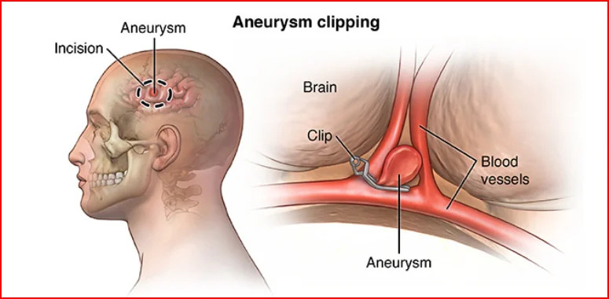

Surgical Clipping for Brain Aneurysms in Delhi

Intracranial aneurysms are a medical ailment that many people are afraid of. These aberrant blood artery bulges inside the brain can be a ticking time bomb, offering a considerable risk of rupture and potentially disastrous effects. When it comes to treating cerebral aneurysms, one common concern is whether surgical clipping is the best approach.
This blog will explore cerebral aneurysms, the surgical clipping technique, its pros and cons, and global statistics on its efficacy.
Reach Out for Expert Care
What is an Intracranial Aneurysm?
A cerebral or brain aneurysm, or intracranial aneurysm, is a weak or thin area on a blood artery in the brain. This vulnerable region can inflate or expand. If it ruptures, it can cause a life-threatening illness known as a subarachnoid hemorrhage, which is bleeding into the space around the brain.
Intracranial aneurysms can vary in size and shape, and their location inside the brain can significantly impact their dangers.
What are the Treatment Options for Intracranial Aneurysms?
When an intracranial aneurysm is discovered, there are two basic therapeutic options:
- a) Surgical clipping: In this technique, a neurosurgeon places a tiny metal clip at the base of the aneurysm to separate it from the main blood artery. This keeps blood from entering the aneurysm, lowering the risk of rupture.
- b) Endovascular Coiling: This is a minimally invasive procedure in which a neuro-interventional radiologist uses a catheter to access the aneurysm through the blood vessels and places soft coils within it to block blood flow.
Surgical Clipping: A Time-Tested Approach
This procedure possesses the following advantages:
- Durability
One of the primary advantages of surgical clipping is its durability. When a neurosurgeon clips an aneurysm, they place a small metal clip at the base of the aneurysm, effectively isolating it from the main blood vessel. Once cut, the aneurysm is sealed off from the bloodstream, significantly reducing the risk of regrowth or recurrence. This durability is significant in large or complex aneurysms or patients with multiple aneurysms.
- Efficacy
Surgical clipping is highly effective in preventing aneurysm rupture. By placing a clip at the base of the aneurysm, blood can no longer enter it, reducing the risk of it expanding and potentially bursting. This can be particularly crucial for giant or wide-necked aneurysms that may be challenging to treat with coiling alone.
- Long-Term Follow-Up
Patients undergoing surgical clipping often require less frequent long-term monitoring than those who opt for endovascular coiling. This can mean fewer follow-up appointments and less ongoing medical intervention, providing patients with peace of mind and convenience.
Endovascular Coiling: A Minimally Invasive Alternative
While this procedure offers some benefits, it may not be the ideal choice for all aneurysms for the following reasons:
- Less Invasive
Endovascular coiling is less invasive compared to surgical clipping. It involves threading a catheter through the arteries from an access point, often in the groin, rather than opening the skull. This typically results in a shorter hospital stay and faster recovery.
- Reduced Scarring
Given its minimally invasive nature, endovascular coiling leaves minimal to no visible scarring on the patient’s scalp. This can be an aesthetic advantage for some individuals.
Why is Surgical Clipping May Be Preferred?
While endovascular coiling offers less invasiveness and reduces scarring, surgical clipping is sometimes the preferred choice. Here’s why:
- Aneurysm Characteristics
The choice between surgical clipping and endovascular coiling significantly depends on the characteristics of the aneurysm. Surgical clipping is often favored for large, wide-necked, or complex aneurysms, where placing coils may be challenging or less effective.
- Aneurysm Location
The location of the aneurysm within the brain also influences the treatment decision. Surgical clipping is often preferred for aneurysms in regions where precise coil placement may be difficult or for those requiring more extensive intervention.
- Risk of Recurrence
In cases where the risk of aneurysm recurrence is a concern, surgical clipping provides a durable solution. The aneurysm is isolated and clipped, less likely to re-expand over time.
- Patient’s Overall Health
The patient’s health and medical history are essential to the treatment decision. Surgical clipping may be preferred for patients who are good candidates for open surgery and whose aneurysms’ characteristics align with clipping’s advantages.
Dr. Vikas Gupta states, “Choosing between surgical clipping and coiling is not a one-size-fits-all decision. It’s crucial to carefully evaluate the aneurysm’s characteristics, its location, and the patient’s overall health. The preference for surgical clipping in specific instances is based on providing the most effective, durable, and safe solution. Collaborative discussions with the patient and the medical team ensure that the chosen method aligns with the patient’s best interests.”
What are Some of the Most Important Statistics on Surgical Clipping?
The statistics below will help to understand the preference for Surgical Clipping over Endovascular Coiling for Intracranial Aneurysms.
- Success Rates: Surgical clipping has a high success rate, ranging from 85% to 90%. This means that the procedure often prevents aneurysm rupture and associated complications.
- Mortality Rates: Mortality rates for surgical clipping are relatively low, with the procedure resulting in death in less than 0.8% of cases. It is essential to note that this rate can vary based on factors such as the patient’s overall health, the aneurysm’s location, and the surgeon’s experience.
- Complication Rates: Complications following surgical clipping occur in a minority of cases, with infection and postoperative bleeding being the most common. However, severe complications are rare and can be mitigated with appropriate postoperative care.
The testimonials below reflect patients’ positive experiences who entrusted Dr. Vikas Gupta with their intracranial aneurysm treatment. They highlight the effectiveness and peace of mind that surgical clipping can provide, especially for complex cases.
Sarah Turner – “I cannot express enough gratitude for Dr. Vikas Gupta and his team. When I was diagnosed with a challenging, wide-necked intracranial aneurysm, I was understandably anxious. Dr. Gupta recommended surgical clipping, emphasizing its effectiveness and durability. I chose this approach and couldn’t be happier with the results. Dr. Gupta’s skill and precision were remarkable. The surgery was a success, and I now have peace of mind, knowing that my aneurysm is sealed off. Surgical clipping and Dr. Gupta’s expertise were the right choice for me.”
Michael Adams – “I had the privilege of being under the care of Dr. Vikas Gupta for my intracranial aneurysm. When we discussed treatment options, he explained the advantages of surgical clipping, particularly for complex aneurysms like mine. Dr. Gupta’s confidence and experience were reassuring. The surgery went smoothly, and I appreciated the durability surgical clipping offers. Thanks to Dr. Vikas Gupta’s expertise, my aneurysm is no longer a constant worry. I would recommend Dr. Gupta and surgical clipping to anyone facing a similar situation. It made a significant difference in my life.”
Conclusion
Surgical clipping is a highly effective treatment for challenging or more giant intracranial aneurysms, offering durability and long-term benefits, while endovascular coiling is less invasive with reduced scarring. Choosing between these methods should prioritize patient needs, considering aneurysm characteristics and overall health. Open discussions with the medical team and seeking second opinions are crucial for informed decisions. Collaboration between patients and professionals ensures the best treatment choice, emphasizing individualized care for optimal outcomes and preserving quality of life in managing intracranial aneurysms.

Dr. Vikas Gupta’s Medical Content Team
Dr. Vikas Gupta’s medical content team specialises in creating accurate, clear, and patient-focused healthcare content. With strong clinical understanding and expertise in technical writing and SEO, the team translates complex medical information into reliable, accessible resources that support informed decisions and uphold Dr. Gupta’s commitment to quality care.
This content is reviewed by Dr. Vikas Gupta
Related Blogs